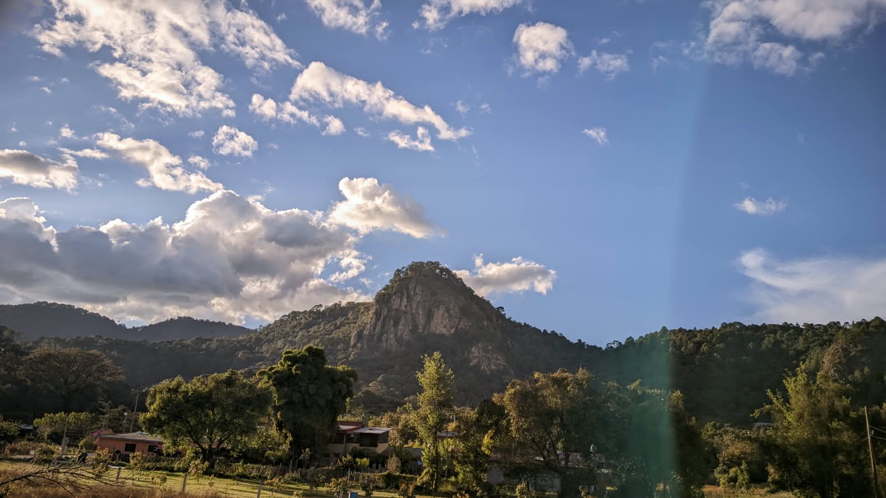
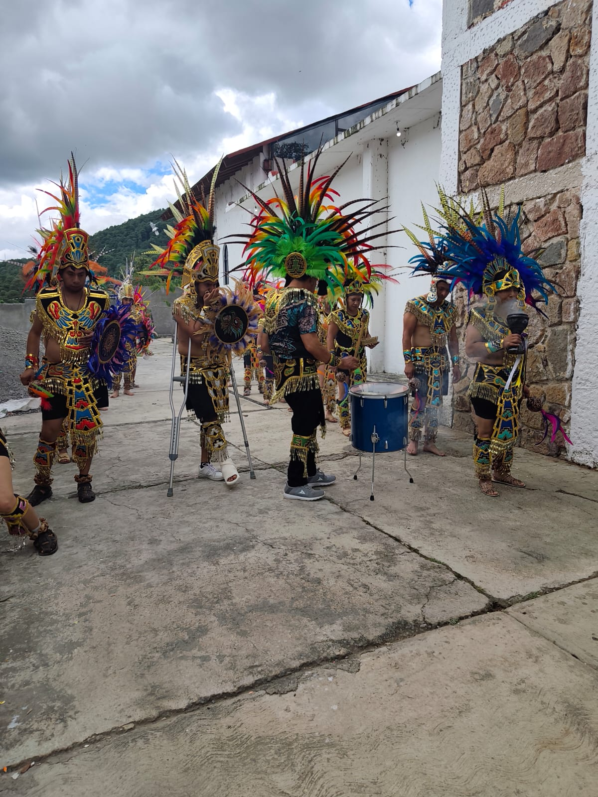
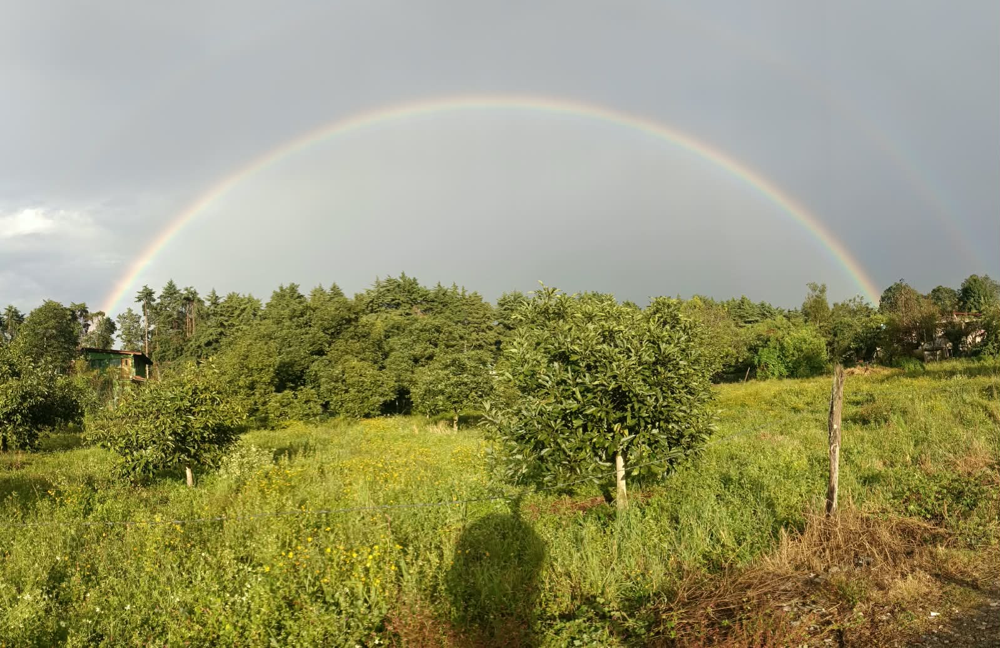

Nuestra historia
Conoce los orígenes, acontecimientos y lugares que forman parte de nuestra memoria.
Conocer más →CULTURA · IDENTIDAD · COMUNIDAD
Explora nuestras raíces, conoce las historias de nuestros habitantes y descubre las tradiciones que hacen única a nuestra región.
NUESTRA IDENTIDAD
Cada comunidad guarda tesoros culturales, recuerdos y costumbres que merecen compartirse.

Conoce los orígenes, acontecimientos y lugares que forman parte de nuestra memoria.
Conocer más →
Descubre nuestras fiestas, costumbres, danzas y celebraciones populares.
Conocer más →
Conoce los paisajes y espacios naturales que forman parte de nuestro entorno.
Explorar el sitio →